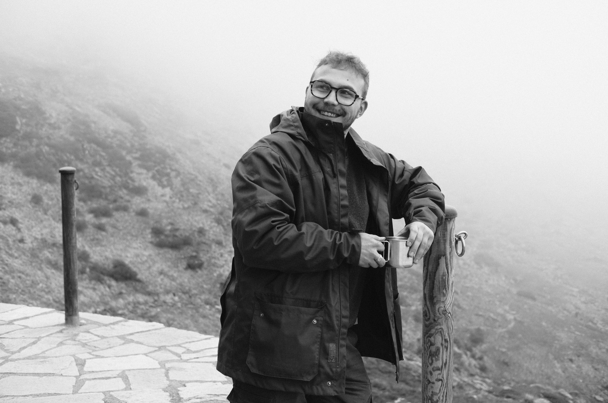
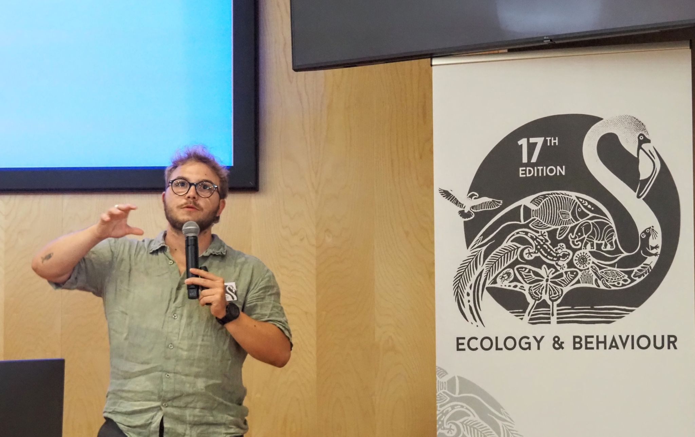
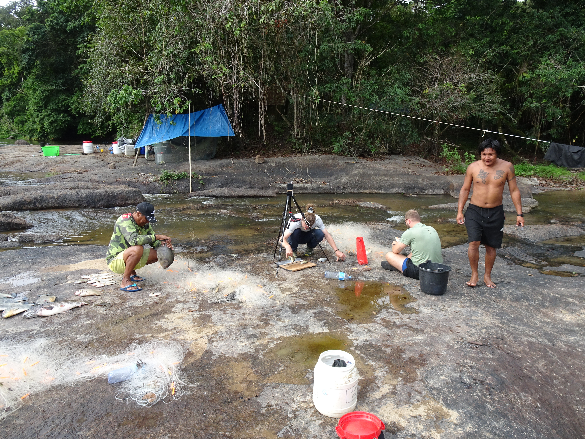
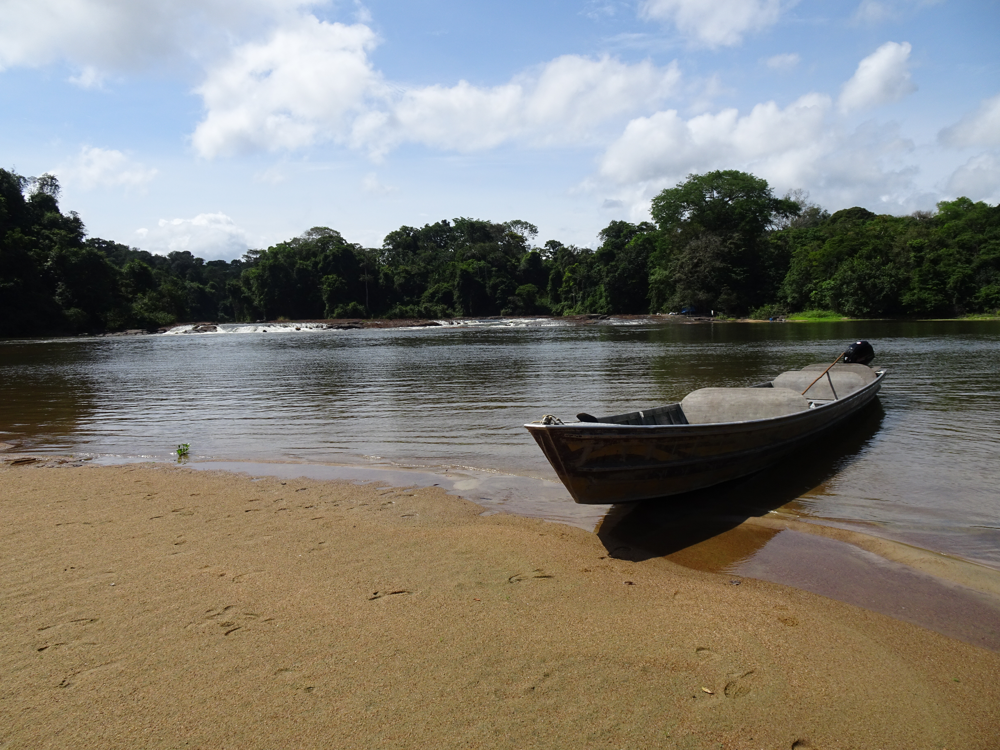
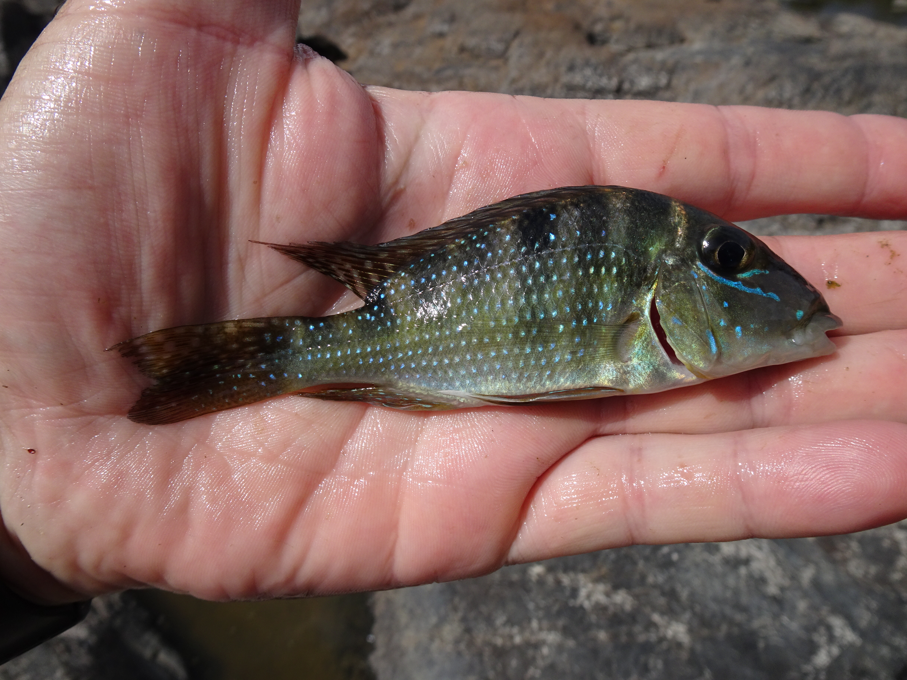
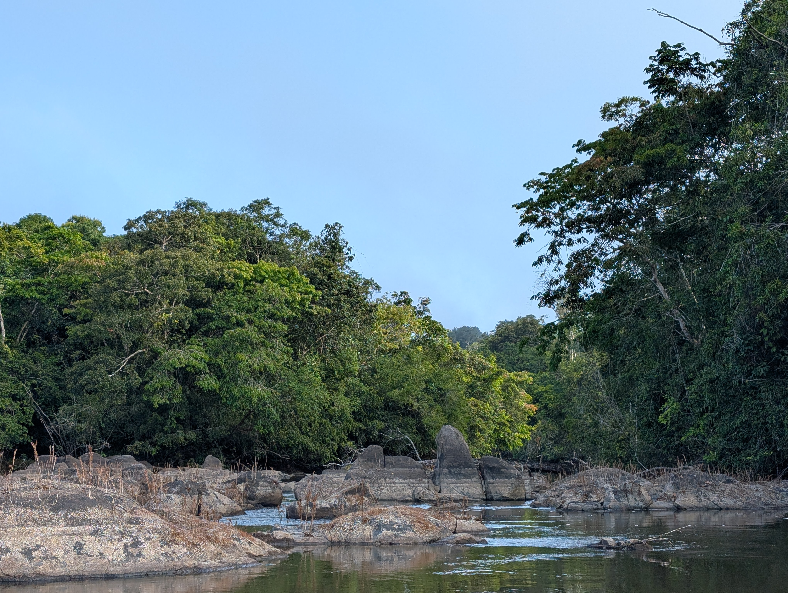

Functional Diversity & Human Use
Analyzing global databases to link functional traits (body size, diet, life history) with human use categories. Does human utility predict extinction risk better than biology alone?
I investigate the functional fingerprint of human activities on the living world. By combining trait-based approaches and macroecology, I study how we reshape biodiversity patterns in the Anthropocene.
As a geographer specializing in community ecology, I bridge the gap between spatial dynamics and functional biodiversity. My research employs a trait-based approach to decipher macroecological patterns and understand the specific footprint of human activities on the biosphere.
I frame my work within the context of the Anthropocene, addressing critical conservation challenges such as human-wildlife coexistence and functional erosion. I am particularly interested in how selective exploitation (fisheries, trade) filters traits and alters ecosystem functioning at global scales.
Beyond the data, I am deeply committed to an inclusive, collaborative, and international scientific practice. I strive to democratize access to knowledge and reduce inequalities in research. When I’m not coding in R, you will likely find me hiking in the woods with my dog or camping in the mountains, seeking the very wilderness I study.

Analyzing global databases to link functional traits (body size, diet, life history) with human use categories. Does human utility predict extinction risk better than biology alone?
Investigating how intraspecific trait variation (ITV) in freshwater fish modifies our understanding of community assembly rules across Neotropical streams.

Major animal lineages, comparative anatomy, biology fundamentals.
Inventory of aquatic biodiversity, freshwater macroinvertebrates, electrofishing.
HPLC, chemical signaling mechanism involving ecological interactions.
Soil ecology, identification, and classification of soil fauna.

Subject: Functional diversity of vertebrates and anthropogenic use. Investigating the link between functional traits, human uses, and the biodiversity crisis.
Identification of pyric and herbivore communities in the Mediterranean basin. Mapping functional groups to understand ecosystem functioning along disturbance gradients.
Characterization of functional traits of Mediterranean woody plants to decipher the roles of fire and herbivory in Mediterranean regions.
Impact assessment of wastewater treatment plants on river ecological quality (dissolved nutrients, N/P dosage) and trophic networks (connectivity).
Night surveillance and medical-social mediation in a facility for individuals with disabilities and mental health conditions.
Post-processing of Haut-Velay field data: LiDAR analysis, numerical analysis, and mapping of archaeological structures (Dynam'Haut project).
Responsible for the Biology and Geography sections at the university library (Tréfilerie and Métare campuses).
Prospecting castral sites in granitic Haut-Velay. Study of spatial and territorial relations between different castra.
Study of compost and vegetation cover effects on microbial and fungal community structures in Technosols.






